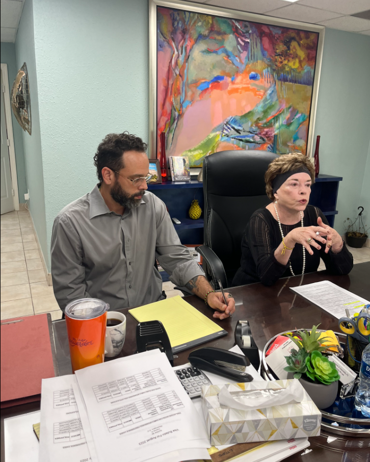

About Our Law Firm
Attorney Donnelly began practicing Immigration and Nationality Law in 1980, after graduating from the University of Texas in Austin. She is an immigrant from Venezuela herself. Under her direction, our law firm successfully handles a wide spectrum of complex family immigration to employment-based cases. Each year, our attorneys and support staff go through many hours of training to remain informed of the latest developments in the law. Don't risk your family on a notary! Contact Us.
El abogado Donnelly comenzó a ejercer el derecho de inmigración y nacionalidad en 1980, después de graduarse de la Universidad de Texas en Austin. Ella misma es una inmigrante de Venezuela. Bajo su dirección, nuestra firma de abogados maneja con éxito un amplio espectro de casos complejos de inmigración familiar a casos basados en el empleo. Cada año, nuestros abogados y personal de apoyo pasan por muchas horas de capacitación para mantenerse informados sobre los últimos avances en la ley. ¡No arriesgues a tu familia ante notario! Contáctenos.
Her son has recently graduated law school and is licensed under her supervision.
